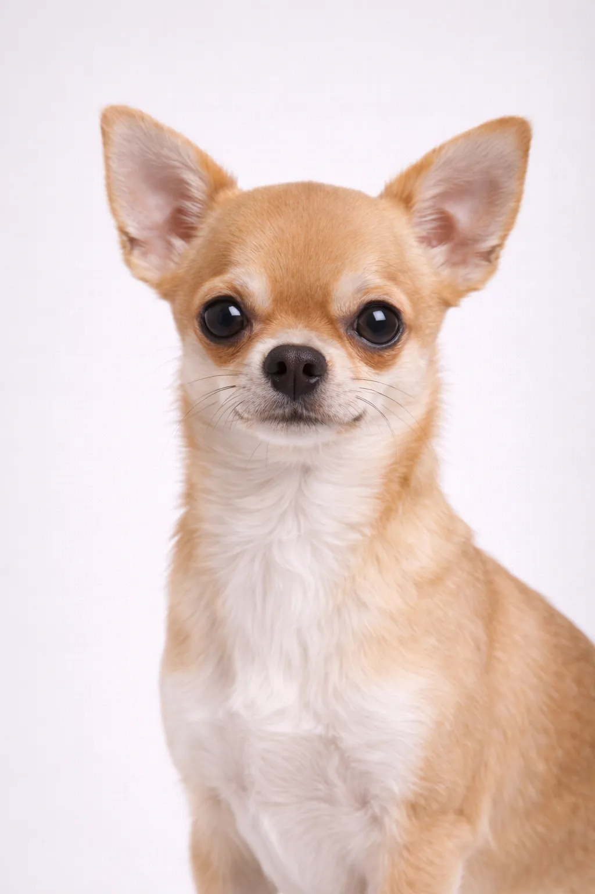

トイ
超小型
チワワ
魅力的な, 優雅な 素晴らしいコンパニオンになる超小型犬種.
原産国
メキシコ
寿命
14-16 年
体高
15-23 cm
6-9 in
6-9 in
体重
1.5-3 kg
3-7 lbs
3-7 lbs
犬種の評価
活動レベル3/5
お手入れ1/5
しつけやすさ3/5
子供との相性2/5
マンション向き5/5
吠え声5/5
性格
魅力的優雅生意気な献身的警戒心
概要
チワワは最小の犬種ですが、巨大な個性を持っています。飼い主に忠実で、小さな体にもかかわらず気の強い面を見せることがあります。
性格
チワワは、魅力的で、優雅で、生意気な犬種として知られています。小さな子供のいない家庭に向いている場合があります。早期の社会化により、バランスの取れた良き伴侶犬に育ちます。
健康
一般的に健康で、寿命は 14-16 年です。一般的な懸念事項には膝蓋骨脱臼と歯科問題があります。定期的な獣医検診と予防ケアが重要です。健康的な体重の維持は多くの健康問題の予防に役立ちます.
運動
毎日の散歩と定期的な遊びによる中程度の運動需要です。身体活動とリラックス時間のバランスを楽しみます。インタラクティブなゲームやトレーニングセッションが精神的刺激を提供します。一貫した運動ルーティンが健康と幸福を保ちます。
⦿ この犬種はあなたに向いていますか？
✓ こんな方におすすめ
- 幼い子供のいない大人
- マンション住まい
- 高齢者
- 忠実な小さなコンパニオンを求める人
- 旅行のコンパニオン
✗ こんな方には不向き
- 小さな子供のいる家族
- 寒い気候
- 吠え声が嫌いな人
- 社交的な犬を求める人
総合評価: 超小型ながらも頼もしい犬種です。チワワは飼い主に対して忠実で献身的ですが、他人には警戒心を抱くことがあります。アパート暮らしの大人に最適な犬種です。小さな子供のいる家族には向いていません。